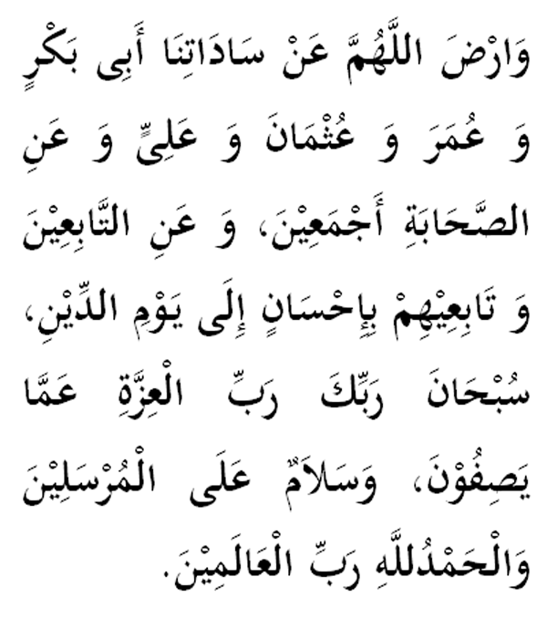

|
Terjemahan "Terima dan redhailah ya Allah akan penghulu-penghulu kami, Sayidina Abu Bakar, Umar, Uthman, Ali dan para sahabat Baginda semuanya, juga para tabi'in dan orang yang mengikut jejak langkah mereka sehinggalah ke hari pembalasan. Terimalah (kepulangan) mereka dengan sebaik-baiknya". Fadhilat Wirid Imam Nawawi menulis dalam kitabnya (al-Azkar) : "... kami riwayatkan dalam Hilyatul Aulia daripada Sayyidina Ali: Sesiapa yang ingin menyukat dengan penyukat yang lebih sempurna, maka katakanlah di akhir mana-mana majlis dengan (bacaan di atas)." |

|